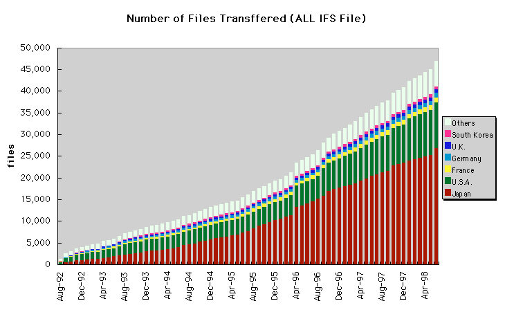
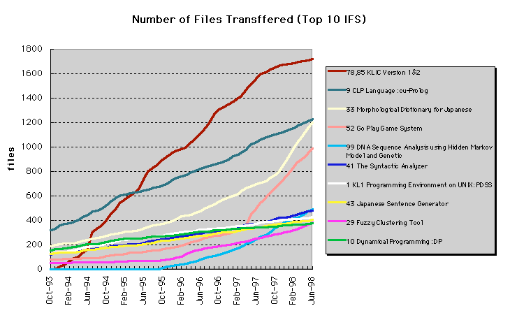

ICOT has started distribution of IFS via Internet since August 1992. Many people from many countries have accessed IFS so far. Recently, the number of accesses is impressively increasing with a new release of KLIC system.
The first graph shown below indicates transition of the total number
of accesses to the files including accesses to the documents such as
"Read-me".
The next graph indicates transition of the total number of accesses to
the most popular 10 software programs.
The total number of accesses to IFS including accesses to the files such as "Read-me" has reached to 46,760 at the end of June 1998. The number of accesses only to the program files(excluding "Read-me") is approximately 18,995, which is a half of the total access number.

